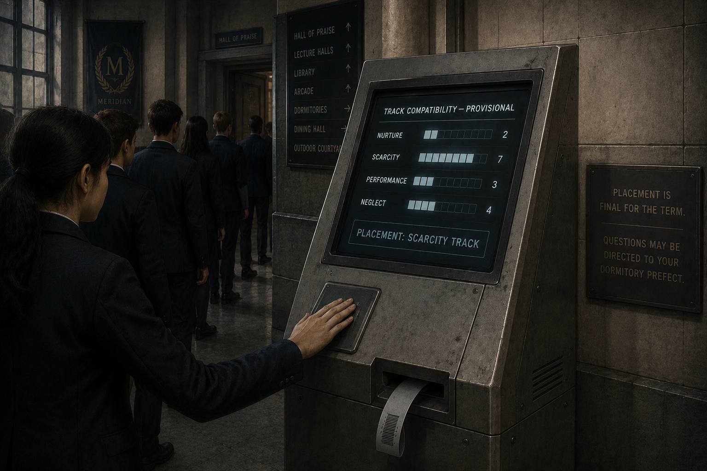
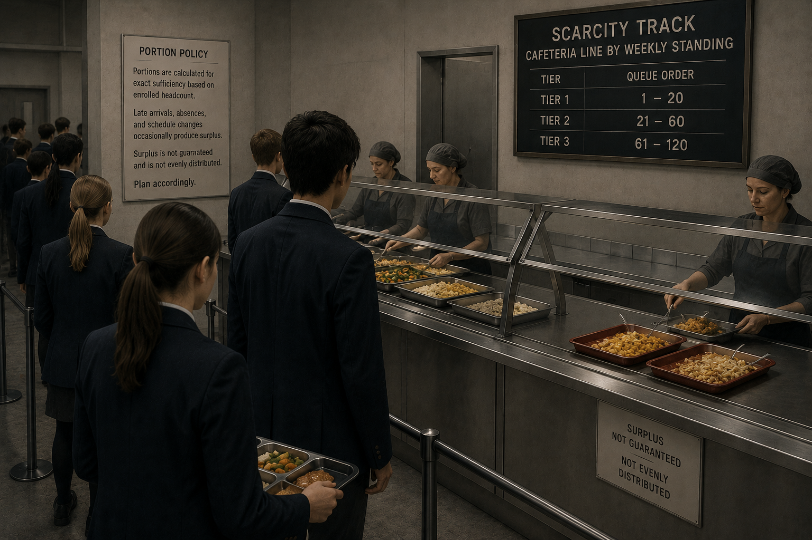
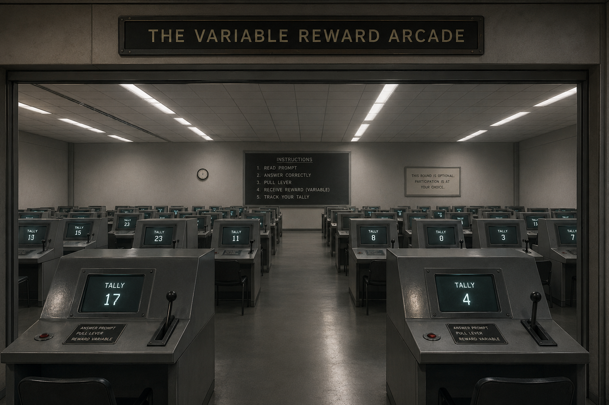
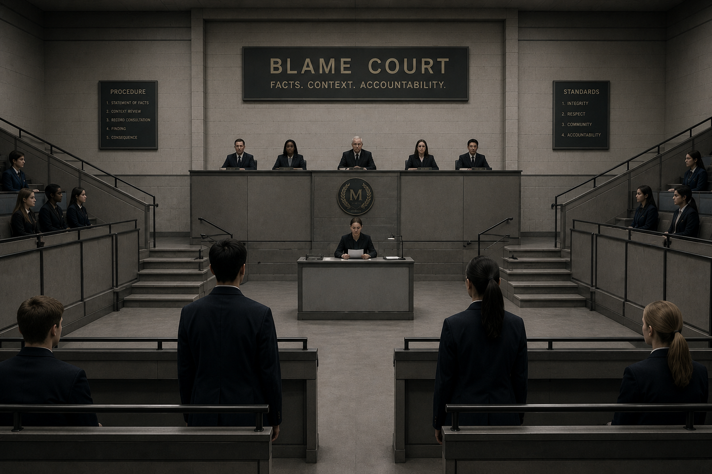
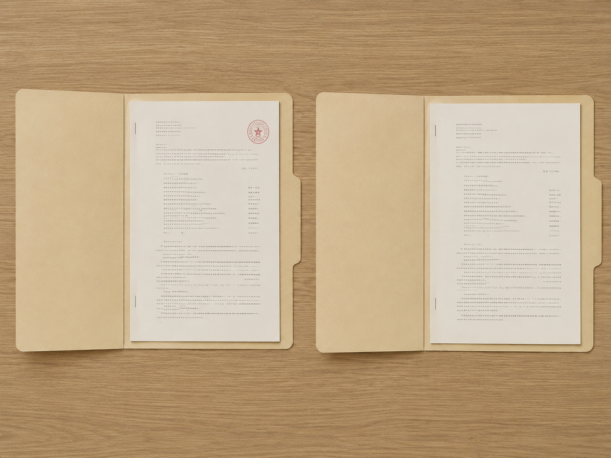
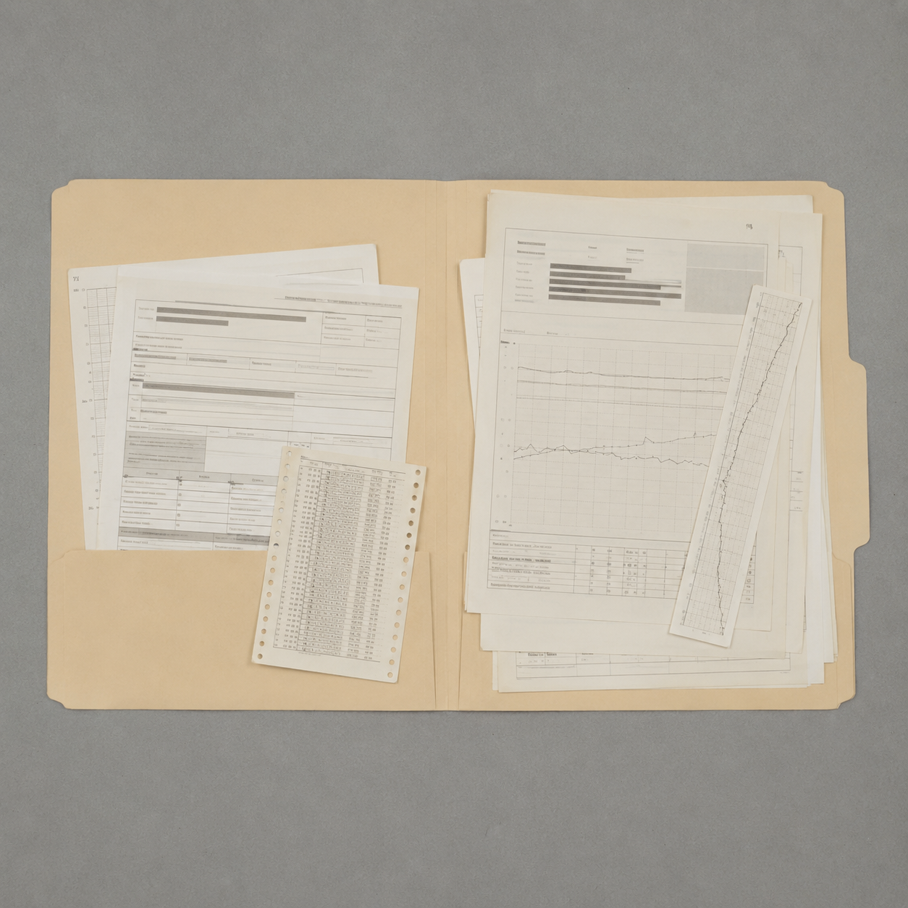

A Book of Antecedents
This is a book about choices.
That is what the school calls them.
At every door you will be asked to decide something: speak or stay silent, share or keep, step forward or look away. Each answer will feel like yours. Some will feel brave. Some will feel shameful. A few will feel so familiar you will mistake them for who you are.
Before the choice, there was the room. Before the room, the rule. Before the rule, the reward. Before the reward, the hunger. Before the hunger, the home. Before the home, the world that built it.
Not because you are free of what came before it. Because what came before it is already moving.
Please answer honestly. Your responses determine dormitory, track, and daily schedule.
1. When you made a serious mistake as a child, the adults around you usually —
a) sat you down and explained what had gone wrong
b) responded with immediate, forceful correction
c) said nothing, and you were left to work it out alone
2. Food and basic necessities in your home growing up were —
a) dependable, regardless of how you behaved
b) tied to conditions — earned, withheld, or used as leverage
c) unpredictable in a way that had nothing to do with your conduct
3. When an authority figure raised their voice at you, your body's first move was usually to —
a) hold your ground and match the energy
b) go quiet and make yourself smaller
c) look for the nearest way out of the room
4. Praise, when you got it, tended to arrive —
a) reliably, when you'd genuinely done something well
b) unpredictably — sometimes for the same thing, sometimes not
c) rarely, and you learned not to expect it
5. When resources were limited — attention, food, time, affection — the people around you treated it as —
a) something to be divided fairly
b) something to be won
c) something that simply ran out
Answers logged.
The gates of Meridian Academy are wrought iron, twice your height, and standing open — which somehow makes them more imposing than if they'd been shut. Above the archway, gold script catches the morning light:
YOUR FUTURE IS YOUR DECISION.
The quad beyond is limestone and old trees, students crossing it in navy blazers, laughing, shoving each other's shoulders, checking phones. A banner strung between two lampposts reads WELCOME, CLASS OF DISTINCTION — MAKE IT COUNT. Somewhere a bell is being tested, one clean note repeated at intervals, like something clearing its throat.
A woman with a clipboard and a name badge reading MS. OKAFOR, ORIENTATION finds you near the fountain.
"First years to the Hall for assembly," she says, not unkindly, already moving on to the next uncertain-looking arrival. "You'll want to be seated before the Headmaster starts. He notices the empty chairs."
The Hall is enormous — vaulted ceiling, rows of folding chairs facing a stage, a lectern with the school crest. You find a seat near the back as the room fills. The Headmaster steps up. He's older, silver-haired, with the unhurried warmth of someone who has given this speech many times and still believes every word of it.
"Every one of you," he says, once the room has quieted, "arrived here today because of a choice. Yours. Not your parents'. Not fate. You chose ambition. You chose discipline. That is what this school rewards, and what it will keep rewarding, for as long as you keep choosing it."
Applause. Someone near the front actually cheers.
"Before we begin," he continues, "I like to hear from a few new voices. One word — just one — for why you're excited to be here. Any volunteers?"
Hands are already going up around you, quick and eager. The Headmaster's eyes are moving across the crowd, waiting.
Your hand is up before you've fully decided to raise it. The Headmaster points to you; a few hundred faces turn.
"Growth," you say. Your voice comes out steadier than you expected.
"Growth," he repeats, nodding like you've confirmed something he already knew. "Excellent. Let's give it up for our new student."
Applause again, brief and warm, and then it's someone else's turn. You sit back down. Your heart is going fast, but underneath the nerves there's something that feels almost like pride.
Interesting, that it felt like your idea.
The Headmaster's eyes pass over you without stopping. Someone two rows up is already answering — "opportunity" — and he's nodding, moving on. You let your breath out slowly. Around you, hands are still going up, eager, and you feel something you can't quite name: relief, mostly, with a thin thread of something like disappointment running under it.
Interesting, that staying still felt like the safer option before you'd weighed anything at all.
Near the Hall's east exit, a kiosk hums, screen lit. A short line has formed — the same ritual repeating itself in front of you, student after student pressing a palm to the reader and waiting.

When your turn comes, the screen resolves into four bars.
A wristband dispenses from a slot below the screen — thin, gray, stamped with a barcode. A small placard beside the kiosk reads only: PLACEMENT IS FINAL FOR THE TERM. QUESTIONS MAY BE DIRECTED TO YOUR DORMITORY PREFECT.
Nobody around you seems to find this strange. A boy ahead of you glances at his own bars — Performance, 6 — and shrugs, already moving toward a door marked with a small gold pin.
You look at your wristband. Gray.
The Scarcity dormitory is a converted wing on the north side of campus — older brick, thinner windows, a communal kitchen with a posted schedule for who eats when. A prefect with a clipboard checks your band against a list and hands you a folder without much ceremony.
"Orientation packet, meal times, room number," she says. "Meals aren't optional but they're not guaranteed either — kitchen runs on a rotating priority system tied to your weekly standing. You'll figure it out."
She's already looking past you at the next student in line.
Your room is small, shared, a single window facing the quad where you can see the Nurture dormitory's wing — wider windows, a courtyard with actual grass. You don't remark on it. Neither does your roommate, unpacking in silence on the other side of the room, though you both clock it.
The packet includes a schedule. First stop, this morning: The Hall of Praise.
The Hall of Praise is bright in a way that feels almost aggressive after the dormitory — skylights, white walls, a floor-to-ceiling board at the front of the room labeled WALL OF ACHIEVEMENT, gold stars arranged in columns under each student's name. An instructor, brisk and cheerful, hands out worksheets.
"Timed exercise," she says. "Correct answers earn Merit Tokens — one per problem, displayed live on the wall. Fastest accurate sheet in the room gets first pick of lunch slot for the week."
The worksheet is manageable — nothing you can't do. You're most of the way through it, tokens already ticking up next to your name on the wall, when you notice the student beside you has stopped moving. Stuck. His pencil hovering over the same problem for almost a minute now, eyes flicking toward the clock.
Helping him will cost you time. Maybe two problems' worth, maybe more, on a sheet where speed is the thing being measured and displayed for everyone to see.
You lean over, murmur the method, watch him get it, then return to your own sheet with less time than you had a minute ago. Your token count on the wall falls two behind where it would have been. It's a small gap. It still stings more than you expected it to.
You told yourself it was the decent thing to do. It's also true that you weren't sure yet what standing here would cost you — and helping him felt, for a moment, like a way of building something with someone rather than against them. Under Scarcity's conditions, that impulse runs against the room's design, not with it. The wall doesn't have a column for it.
You keep your eyes on your own sheet. He's still stuck when the timer ends; you finish two ahead of where you would have landed otherwise, tokens climbing steadily on the wall next to your name.
Nobody told you, in as many words, that his problem wasn't your problem. You arrived at that on your own, in about the time it takes to glance at a clock. Meals this week are rationed by standing. Standing is measured in tokens. The arithmetic wasn't hard.
A file, accessible from a terminal in the library, logged under Comparative Behavioral Studies. It concerns a Nurture Track student, same worksheet, same morning, same student stuck beside her.
She stopped and helped him. It cost her the same two problems it would have cost you. At the end of the period, her token count showed the gap — and beside it, a second, smaller mark the instructor added by hand: a note, not a deduction, that read helped a peer. Lunch slots in Nurture aren't rationed; there was nothing riding on the two problems either way.
She didn't do the arithmetic, because in her track, there was no arithmetic to do.
Same worksheet. Same stuck classmate. Same two problems. The room decided what the gesture would cost.
The bell sounds — the same clean note you heard being tested that first morning, now marking the end of the period. The instructor calls out the standings, top three names read aloud to light applause. You file out with the rest of Scarcity Track, wristbands gray against the corridor's white walls, headed for the next room on the schedule.
A sign above the next doorway reads: THE PUNISHMENT ROOM.
The Punishment Room is smaller than the Hall of Praise, windowless, and quiet in a way that feels enforced rather than natural. Rows of desks face a chalkboard where a single rule is written in block letters:
SILENT STUDY. ANY NOISE, ANY INTERRUPTION, IS CORRECTED.
The instructor, Mr. Voss, is not shouting or theatrical — he's mild, almost bureaucratic, moving between desks with a clipboard, marking demerits the way someone else might stamp forms. He explains the system once, briefly, at the start of the period: talk, shift a chair loudly, drop something — any of it earns a mark. Three marks in a week and you lose your free period. He says this without apparent relish. It's simply how the room runs.
You're most of the way through a reading assignment when your elbow catches your textbook and it slides off the desk, hitting the floor with a crack that seems enormous in the silence. Every head near you turns. Mr. Voss looks up from three rows away, already walking over, clipboard ready.
You have maybe two seconds before he reaches you.
"It was an accident, my elbow caught it, I'm sorry —"
Mr. Voss doesn't look particularly interested in the explanation. He marks the demerit anyway. "Noted regardless of intent," he says, already moving to the next row. "The rule doesn't distinguish. Please retrieve your book quietly."
You pick it up. Your face is hot. The demerit stands next to your name for the rest of the week, same as anyone else's.
You spoke before he'd asked anything. Somewhere earlier, that was the version that cost less.
Disciplinary note, filed the same afternoon: Response latency — immediate. Consistent with prior-punishment history; not itself evidence of intent.
It didn't change the outcome here. The room that taught you to shorten the moment wasn't this one.
You go still, eyes down, waiting. Mr. Voss reaches your desk and looks at the book on the floor, then at you, then slowly around at the four or five students near enough to have caused it.
"Someone's book," he says, to the room generally. "No one wants to account for it, apparently. Everyone in this row loses today's free period. Perhaps that will improve group awareness."
The girl beside you gives you a look you can't quite read — not anger, exactly. Something closer to recognition.
Staying still felt like the safer bet. It wasn't, this time — the cost just moved to other people, which somehow makes it worse rather than better. Silence had worked before, though, in rooms where speaking up got noticed and being noticed got expensive. This room doesn't reward it the way that one did. Doesn't matter. The reflex doesn't check the room first.
A file under Comparative Behavioral Studies. Same exercise, same accidental noise, different wing.
A Nurture Track student's book slides off her desk the same way. The instructor there — different name, same rulebook on paper — glances over. "Careful," he says. "Pick it up, we'll keep going." No demerit. No question of who's to blame. The lesson delivered, if there is one, is catch your things next time — something she can actually act on.
Ask her later what she learned from it and she'll probably say: not much, it was a book falling.
Ask the Scarcity Track what it learned, and the honest answer is: nothing about books. Something about consequences arriving regardless of what you do next, which isn't a skill. It's just a thing your body now expects.
The period ends. Mr. Voss reads out demerit totals in a flat voice, unbothered, already turning to his next class list. As Scarcity Track files out into the corridor, nobody talks about what just happened — not the demerit, not the lost free period, not the girl's look. The silence continues past the door, out of habit now rather than rule.
Ahead, a set of double doors is propped open onto a courtyard divided by low fencing into sections. A sign overhead reads: THE RANKING YARD.
The Ranking Yard is a fenced quadrangle divided by low iron railings into three tiers. Tier One has benches under the trees. Tier Two has standing room in partial shade. Tier Three is open gravel, full sun. A board at the entrance updates in real time:
An instructor explains the week's exercise: paired teams, a timed obstacle course, scored jointly. Whichever partner performs worse drags the pair's combined score down; whichever tier you land in afterward determines where you stand — literally — for the following week.
Your partner is a smaller kid, younger, clearly out of his depth on the rope section. He falls twice. By the final obstacle it's obvious your combined time is going to land you both in Tier Two at best, maybe Three, and it's obvious why: not your run, his.
At the debrief, the instructor asks the pair to account for the shortfall before recording the score. Your partner is already starting to explain, voice unsteady, clearly expecting to take the blame alone.
"It was a joint effort," you say. "I could've paced us better on the second obstacle too." It isn't really true. The instructor marks it anyway — shared accountability, standard practice — and your own name moves half a tier lower than it would have otherwise. Tier Two, gravel-side. Your partner's face does something you don't examine too closely.
You gave up standing you'd already earned to reduce what someone else was about to absorb alone. That's worth being precise about: nothing here made that transaction favorable. Tier position sets your bench access, your locker priority, your standing for the next ranking cycle — real things, not symbolic ones — and you traded some of it away. The instinct to spread the cost rather than let one person carry all of it isn't native to this yard. It's carried over from somewhere the yard doesn't reward.
You say nothing. The instructor records the shortfall against your partner's name alone. Your own tier holds. He doesn't look at you on the walk back to the dormitory.
The calculation ran without needing your permission. When a cost can be assigned to one name, it's rarely a mistake if that name isn't yours. Nobody taught you that directly. Water doesn't need to be taught where the low point in a room is.
A file under Comparative Behavioral Studies. Same obstacle course, same joint-scoring rule, Performance Track.
A Performance Track student, paired the same way with a weaker partner, handles the debrief differently again: he explains, at length and with some skill, exactly which parts of the failure were his partner's and exactly which technical adjustments he personally made to compensate. Nothing false, technically. Also not an accounting anyone asked for. The instructor notes his "constructive analysis." His tier holds. His partner's drops a full level.
Ask him afterward why he framed it that way and he'll likely say he was just being accurate. He may believe that. In Performance Track, accuracy that happens to reflect well on the speaker is not distinguished, by the room's incentives, from any other kind.
The board updates before you've reached the dormitory door. Three tiers, three sets of names redrawn. Nobody in Scarcity Track discusses it at dinner — there isn't a rotation that puts you and your former partner at the same table this week, which may or may not be an accident of the scheduling system.
The next morning's schedule reads: THE SCARCITY CAFETERIA.
The cafeteria queue for Scarcity Track runs by weekly standing — the same standing set by the Hall of Praise tokens and the Ranking Yard tiers, now determining where you fall in line and how much reaches your tray by the time you get there. A posted notice explains the logic:

Portions are calculated for exact sufficiency based on enrolled headcount. Late arrivals, absences, and schedule changes occasionally produce surplus. Surplus is not guaranteed and is not evenly distributed. Plan accordingly.
Today there's a surplus. Two trays' worth, sitting untouched at the counter — a scheduling error, a no-show, nobody's explained which. The kitchen staff aren't offering it to anyone in particular; it's just there, available to whoever claims it first; and you're near enough the front of the line to be that person.
Behind you, several places back, is a younger kid you don't know well — new this term, thin, someone who was in Tier Three at the last Ranking Yard update and has been getting the tail end of portions all week as a result.
You could take the extra now, quietly, and either eat it or hold onto it — food doesn't keep long here, but a favor traded later might. Or you could wave him up and let him have it.
Which response comes first?
You take both trays. One you eat there, faster than you need to. The other you wrap and carry back to your room, where it sits, a small hedge against a week you haven't lived through yet.
Sustained caloric uncertainty tends to shift decision-making toward the present and toward self-protective hoarding; this isn't a claim about your character, it's a well-documented effect of unpredictable deprivation on discounting behavior, though the size of the effect varies by person and context. Something like it would likely appear in most people run through the same schedule for long enough.
You wave him up. He takes the tray without much comment — maybe a little surprised, mostly just hungry — and eats standing at the counter before anyone reconsiders. You go back to your own portion, which was already accounted for and doesn't change either way.
This one's worth sitting with rather than explaining away: you had real reason to expect you might need that surplus more than you'll admit, and you gave it up anyway. That doesn't mean the impulse arrived from nowhere. It's also shaped by history — reciprocity, the specific kind you learned, or the discomfort of watching someone visibly go without in front of you. Generosity under scarcity isn't less caused than hoarding under scarcity. It's just caused by a different history running against the room's incentives rather than with them.
A file under Comparative Behavioral Studies. Same day, same kitchen error, Nurture Track cafeteria.
Surplus shows up there too — different schedule, same clerical accident. Nobody hoards it, but nobody frames declining to as a sacrifice either. A few students split it without discussion, the way people share fries. Ask any of them what they decided and they'll look at you strangely: there wasn't a decision to report. Portions aren't rationed by standing in that wing. There's no future week to hedge against.
The behavior isn't more virtuous. It's cheaper. Scarcity Track pays a real cost either way it goes; Nurture Track doesn't pay one at all.
By evening the surplus, wherever it went, is gone — eaten, hoarded, or forgotten, and the standing board resets for the coming week regardless. Scarcity Track's dinner shift files out past a corridor you haven't walked before, cameras visible at intervals along the ceiling, small red lights steady.
A sign at the entrance reads: THE SURVEILLANCE CORRIDOR.
The corridor connecting the dormitories to the lecture halls is longer than it needs to be, and lined at intervals with small domed cameras, red lights steady. A posted notice, laminated and slightly yellowed, explains the policy:
Corridor monitoring supports campus safety and behavioral assessment. Footage may be reviewed for conduct evaluation. Not all cameras are active at all times.
That last line does more work than it should. Nobody knows which domes are live.
Partway down, you pass a supply alcove — unlocked, stacked with materials for the Hall of Praise: worksheet packets, a box of the gold merit stickers awarded for top scores. Nobody's around. Two cameras are visible from where you're standing; one has a light on, one doesn't.
You're behind on tokens this week. A few stickers, applied to your own sheet before the next scoring period, wouldn't be noticed against everything else on the wall — you've watched instructors mark by count, not by checking each sticker's origin.
Which response comes first?
You take six, pocket them fast, and keep walking, eyes forward, not looking back at the dome with the light on.
Notice the specific thing your attention did in that alcove: it went to the cameras, not to the stickers, and it went to the one with the light on more than the one without. That's not incidental. Behavior that would otherwise run freely narrows sharply under the belief that it might be watched — an effect that holds up whether or not anyone is actually watching, because the nervous system responds to the possibility of observation, not to confirmed observation. You didn't decide the ratio between the two domed lights meant anything. Your attention decided it before you had a sentence for it.
You leave the stickers where they are and keep walking. The token gap stays what it was. You tell yourself, once you're past the second camera, that you'd have left them alone regardless of who was watching — that this was about something more than the light on the dome.
Hold that claim lightly. The corridor was built so you couldn't verify which cameras were live — uncertainty that produces caution whether or not anything is actually recording. What you'd have done in an unmonitored hallway isn't information you have. This hallway was never confirmed to be one.
A file under Comparative Behavioral Studies. Same corridor design, same supply alcove, Neglect Track.
A Neglect Track student passes the same alcove. No hesitation at the cameras — not because he's braver or more principled, but because in his experience so far, being watched has rarely translated into anyone doing anything about what they saw. Arbitrary authority produces a specific, testable prediction: erratic or absent enforcement teaches that surveillance and consequence aren't reliably linked. He takes the stickers without checking either dome.
He gets caught two days later — a different mechanism catches him, unrelated to the cameras entirely — and the punishment, when it lands, feels arbitrary to him in exactly the way punishment always has. Not because it's unfair by the rulebook. Because nothing in his history taught him which moments carry real stakes and which don't, so he has no reliable way to tell them apart in advance.
The corridor ends at a set of doors leading into a wide, low-ceilinged room fitted with rows of consoles, each one paired with a lever and a display screen. A faint electronic hum runs under everything. A placard above the entrance, newer than the others you've seen, reads:
THE VARIABLE REWARD ARCADE.

The Arcade is rows of consoles, each with a lever and a screen displaying a running tally. An instructor gestures at them without much preamble.
"Bonus round, open to anyone below target token count. Answer a quick prompt correctly, pull the lever. Sometimes it pays out a token toward the Wall of Achievement. Sometimes it doesn't. No fixed pattern — that's not a bug, it's how the round's designed. Optional. Entirely up to you."
You're behind this week. You sit down, answer the first prompt correctly, pull the lever. Nothing.
Second prompt, correct, pull. Nothing.
Third, correct, pull — a token drops, display flickers, tally ticks up one.
Fourth and fifth, nothing. You've been at it eleven minutes. You could stop now and go finish the coursework due this afternoon, which counts toward your standing on a fixed, guaranteed basis — no lever, no chance involved, just work in exchange for credit.
Which response comes first?
You stay. Six more pulls, one more token, the wait between payouts stretching longer than it did before. You tell yourself the next one is due.
Notice what a fixed, guaranteed reward could never produce in you: this. Predictable payoff for effort — the coursework sitting untouched down the hall — doesn't generate this pull to keep going after five straight failures. Unpredictable payoff does, reliably, in almost any organism tested against it. Behavior reinforced on a variable schedule is not just persistent — it's the single hardest pattern to extinguish, harder than behavior rewarded every single time. You are not doing something irrational. You are behaving exactly as the console was built to make persistence feel.
You get up after the fifth miss and walk to the study hall instead. The coursework is dull, entirely predictable, and it counts. Behind you, you can still hear the console's soft chime — someone else, further down the row, just hit a payout.
Leaving cost you something the lever kept dangling: the specific, low-grade itch of an unresolved sequence. That itch isn't weakness. It's what a variable schedule is designed to produce in anyone still sitting at it — you're simply no longer close enough for it to pull on you the way it was starting to. The coursework will pay out exactly as promised, which is precisely why it can't compete with a machine built to withhold on purpose.
A file under Comparative Behavioral Studies. Same consoles, Performance Track.
Performance Track students engage the Arcade at a measurably higher rate than any other track — not because the payout schedule differs (it doesn't; the mechanism is identical across all four dormitories), but because token count there is displayed publicly, updated live, ranked. The variable-reinforcement pull is the same pull that hits everyone. Layered under public ranking, it compounds: each pull is now also a bid for relative standing, and standing is watched.
Ask a Performance Track student why they've been at a console for forty minutes and the answer is rarely "because the schedule is variable." It's usually some version of "I was so close." The schedule doesn't need them to understand it. It only needs them to keep pulling.
A file under Comparative Behavioral Studies. Same consoles, Neglect Track.
A Neglect Track student sits down at a console without being told the bonus round is optional — nobody mentioned it was, and nobody in that wing reliably explains rules before enforcing them, so he assumes participation is required. He pulls the lever nine times, gets two payouts, and stops only when a proctor tells him class is over. Asked afterward if he found it frustrating, he shrugs: an intermittent machine that sometimes gives you something for no clear reason isn't meaningfully different from most of the adults he's dealt with. The schedule that would produce persistence and mild agitation in Scarcity, and a public-standing compulsion in Performance, produces something closer to resignation here — not because the reinforcement is weaker, but because unpredictability stopped registering as informative a long time before he reached this room.
Same lever. Same schedule. A third response, shaped by a third history.
The tally resets overnight, same as every board in the school. A notice posted at the Arcade's exit reads, in the same even institutional voice as everything else: CONSOLES REOPEN 0700.
Ahead, a corridor leads to a set of double doors marked BLAME COURT.
Blame Court sits in what used to be a lecture hall — tiered seating intact, but the podium's been replaced with a long table where three prefects and an assistant administrator sit. Two folding chairs occupy the cleared front row, plainly for defendants.

A clerk checks a second sheet before reading names aloud — a standard cross-reference against the term's disciplinary file.
The clerk reads from a clipboard as you enter:
"Case one: unauthorized removal of merit materials from the Hall of Praise supply alcove. Two students named. Scarcity Track, apprehended by corridor footage. Neglect Track, separately identified two days later during inventory reconciliation."
The clerk reads two entries under your name, not one: the Punishment Room demerit, then the sticker case. "Second infraction this term," she says, mostly to the panel. "Recommend individual docket rather than joint hearing."
You're seated alone. No Priya, no Eli, no comparison case — the room narrows to just your file.
"Pattern of disregard for posted procedure," the assistant administrator reads aloud. "Prior correction did not produce behavioral change." She looks up. "Do you have anything to state?"
Whatever you say here, the outcome has effectively already been decided by the second line item on the sheet, not the first — the panel isn't weighing this incident so much as confirming a trend it had already flagged.
The ruling: transfer to Meridian's remedial annex, a separate building on the grounds' far edge, reserved for students the disciplinary file has stopped treating as individual incidents and started treating as a trajectory. No Governance rotation. No Control Room. Ms. Okafor doesn't meet you at the door this time; a different staff member, unnamed, walks you across campus without much conversation.
"Every student here had the same choice," the assistant administrator says as the session closes — the same line delivered to the room whether or not it happened to be watching a case where two data points got treated as proof of character before a third had a chance to complicate the story.
Notice precisely what closed the case: not the second act being worse than the first, but the panel reading two independent antecedent chains — an instructor's flat demerit policy, a schedule that made stealing arithmetic favorable twice — as a single continuous fact about you. That reading was available to the panel and it took it, because a trend is cheaper to act on than two separate causal stories, and cheaper still than the question of why this track produces multiple infractions per student at a rate the other three don't. Nobody in this room will ask that question today. You won't get the chance to ask it either — Vu's office is on the other side of a rotation you're no longer eligible for.
You won't see the dial bank. You won't hear anyone name the mechanism. The schedule that routed you here doesn't require your understanding to keep running, and it will keep running exactly the same way for the next name the clerk reads off this sheet.
This is the blame path.
You're in the folding chair, wristband visible under the tribunal's fluorescents. The assistant administrator doesn't look up from the folder in front of her.
"Footage confirms removal of six merit stickers from Hall of Praise inventory. Do you have anything to state before a determination is made?"
You could explain: token counts run against meal priority in your track, you were behind, the alcove was unlocked and unattended, and none of that was a secret to whoever designed the schedule. Or you could say nothing and let the demerit land without commentary.
Two responses are available to this version of you. Only one will surface.
Priya stands at the front, arms crossed, wristband turned inward as if that makes it smaller. The charge is the one you half-expected — the count, the two missing packets, footage confirmed.
You were in that corridor the same afternoon. You remember the same alcove, the same two domed cameras, one lit and one dark, and walking on — not because you were better than her, particularly, but because your token gap that week was smaller and the temptation had less to pull against.
Nobody has asked you anything. You could volunteer that you passed the same alcove, felt the same pull, and didn't act on it only because your numbers happened to make the risk not worth it that week — a fact that complicates whatever story is about to get told about who Priya is. Or you could stay in your seat.
Two responses are available. Only one will surface.
The assistant administrator listens, writes something down, and looks up only once you've finished.
"Noted. The Hall of Praise's token requirements are published and identical for every student in your track. Your peers manage them without removing school property. Demerit stands. Two weeks' loss of Arcade privileges."
Notice what happened to the explanation: received, recorded, set aside.
Hearing record, line seven: Mitigating context noted. No adjustment to finding.
A panel that treated the explanation as mitigating would have to ask why this track produces this pressure and the others don't — a question that points at the room's architecture, not at you. Easier to hear it and rule it irrelevant.
You say nothing. The penalty arrives at the same pace regardless: demerit, two weeks off the Arcade. No question asked about why; none offered.
Silence cost nothing extra here — the same outcome would have landed either way, which is itself worth noting. Somewhere earlier, silence in front of a panel was the version that ended fastest and drew the least additional scrutiny. That calculation ran again here, correctly this time, though it was never built for this room specifically. It was built for every room before it.
You stand, unprompted, and say it plainly: you were at the same alcove, the same afternoon, and didn't take anything only because your own wristband number happened to make it not worth the risk that week.
The assistant administrator looks at you a moment — not hostile, recalibrating. "Noted for the record. It doesn't change the finding against the named student, but I'll note that opportunity apparently wasn't limited to one individual." She writes something down. Priya glances back at you, unreadable.
You didn't change the verdict. You put on the record something the room would rather not hold: that this wasn't a story about one student's character, since the same alcove and the same temptation reached at least two people that afternoon, differing only in how the arithmetic happened to fall. Whether that was worth saying isn't something the panel is built to weigh. It only has a column for verdicts.
You stay seated. The case proceeds without your context — Priya facing the standard penalty alone, the panel's account of the incident complete as far as they're concerned.
Worth being precise about the shape of what you just did: not lying, not obstructing — declining to make a true fact available that would have complicated a verdict aimed at someone else. That's a familiar shape. It's the same shape as staying still in the Punishment Room while a whole row lost its free period, except the row is one person now, and you know her name.
Whichever way it went, the panel moves to the second name.
The Neglect Track student is walked forward — Meridian's actual phrase, which he doesn't seem to register as unusual. His name, read from the clipboard, is Eli Marsh. No footage caught him. Inventory reconciliation flagged the shortage two days later, traced it through a supply log, and a search of his room turned up the stickers, still wrapped, unused.
"Do you have anything to state?"
He shrugs. Says he doesn't know why he took them. Says it like the truth, because as far as he can tell, it is — he can't reconstruct the moment or the reasoning, if there was reasoning, and doesn't see much use inventing an account he doesn't have.
The administrator's expression shifts toward something the first case didn't produce. "No accounting at all," she says, mostly to the clerk. "Compounding factor. Recommend the demerit stand with an additional flag for the disciplinary file."
He receives, for the same act committed by the student in the previous case, a harsher and more permanent mark — not because the theft differed, but because his account of it, or absence of one, read as closer to indifference than remorse.

Two students, one alcove, six stickers, unauthorized removal both times. What diverged wasn't the act. It was each student's capacity, walking into this room, to produce a fluent account of themselves — a capacity Nurture and Performance Tracks cultivate constantly through explanation and self-monitoring, and one Neglect's arbitrary, disengaged authority never had reason to build. The panel didn't measure the theft. It measured the performance of accounting for the theft, and scored a skill nobody in the room has agreed to call a skill.
As the session closes, the assistant administrator addresses the room, more habit than instruction: "Every student here had the same choice. What you do with a consequence is still up to you."
Nobody in the gallery reacts. It's the kind of line that gets said often enough to stop registering as a claim.
Ms. Okafor — orientation, the first morning — catches your eye as the room empties. "You've been selected for the term's Student Governance rotation," she says, checking a list. "Half a day, administrative wing. Not a punishment." She taps the list. "Rotation isn't random, if you're wondering. Flagged cases get pulled for review — testimony given on someone else's behalf, a demerit that doesn't fit the track median, that kind of thing. Someone upstairs thought your file was worth a second look. Follow me."
She leads you down an unfamiliar corridor, past doors marked with department names, to one at the end with no label — a keypad, a brass plate: STAFF ONLY. She enters the code without shielding it from you, an oversight, or simply an assumption it wouldn't occur to you to remember it.
The door reads: THE CONTROL ROOM.
The room is smaller than the corridor's blank staff door suggested — banks of monitors, a wall of dials and levers, filing cabinets along one side labeled by track and by mechanism: PRAISE SCHEDULES, RATION ALLOCATION, SURVEILLANCE COVERAGE, DISCIPLINARY WEIGHTING. A woman in shirtsleeves, older, unhurried, is annotating a printout at a console. A small nameplate reads DR. ANH VU, BEHAVIORAL SYSTEMS.
"Governance rotation," Ms. Okafor says, already turning to leave. "She'll walk you through it."
Dr. Vu doesn't look up right away. "Sit if you want. Most students standing where you're standing ask the same first question, so I'll save you the trouble: no, the Headmaster doesn't come down here, and no, he's not being deceptive when he tells the assembly every choice is yours. He believes it. He built half of this himself, forty years ago, on the theory that structured incentive produces disciplined character. He's not wrong that it produces something. He's wrong about what to call it."
She gestures at the dial bank. "Ration allocation for Scarcity Track. Praise-token payout ratios for Performance. Surveillance duty cycles — which domes are live, on what rotation, information nobody outside this room has. Disciplinary weighting, which is the one that decided how much worse it should go for Eli than for the one who could explain himself." She taps the file drawer without opening it. "None of this is hidden from you because it's shameful. It's hidden because visible contingencies are weaker contingencies. A schedule you can see coming, you brace against. That's basic Skinner — variable-ratio schedules, documented for decades and repeatedly replicated across behavioral research. You felt it yourself at the Arcade, whether or not you knew the name for it."
She turns fully now, appraising. "You've been through Praise, Punishment, Ranking, Scarcity, Surveillance, the Arcade, and Blame Court. You watched two students get different sentences for an identical act. I'd guess you have a theory forming about why. I'd also guess you're not sure yet whether it's an accusation or just a description."
She slides the printout across the desk — track-by-track behavioral logs, aggregated, a term's worth of data compressed into columns.
"Go ahead," she says. "Ask whichever question this room already primed you to ask."
"Fair isn't a term I use much," she says. "It assumes a baseline everyone starts from, and nobody here started from the same place — the intake form saw to that before day one. What I can tell you is what the data shows: Scarcity Track's disciplinary rate runs highest, its cooperative behavior lowest, and its outcomes most predictable from the intake variables alone, before a single day of instruction. Nurture Track's numbers invert almost exactly. Performance Track produces the most self-reported stress and the highest engagement metrics, which the board upstairs treats as if those two facts weren't related. Neglect Track's outcomes are the noisiest — not because the students are less predictable people, but because inconsistent contingencies produce inconsistent behavior. That's not a flaw in my measurement. That's the finding."
She sets the printout down. "Is it fair. I think that's the wrong axis. The tracks aren't measuring who you are. They're demonstrating what four different reinforcement schedules do to otherwise-similar starting material. The Headmaster reads the same numbers I do and sees confirmation that character sorts itself. I see four experiments running in parallel with no control group, because there was never a version of this school that didn't sort students on day one."
She adds it almost as an afterthought: "The placement kiosk never explained itself to you, I'd guess. Reliable, explained, fairly-divided answers accumulate toward Nurture. Forceful, competitive, conditional answers toward Scarcity. Unpredictable-but-attentive answers toward Performance. Absent or unrelated answers toward Neglect. Ties default to whichever track carries the more demanding conditions — the logic being that a student prepared for hardship adjusts easily to comfort, and the reverse rarely holds. Nobody explains that on day one. Day one is for slogans."
She pulls a folder without needing to search for it — she clearly knew which one you'd ask for. Inside: your intake scores, the Hall of Praise token curve, your Ranking Yard tier history, cross-referenced against your track baseline.

"Here's what it says, plainly," she says. "You tested high-Scarcity on intake. Your behavior since has tracked the Scarcity median closely — slightly more cooperative than baseline in two instances, slightly more self-protective in one. None of that is a verdict on your character. It's what the schedule predicts for someone with your intake profile, and the deviations are exactly the size you'd expect from ordinary variation, not from some hidden reserve of free choice overriding the pattern."
She closes the folder. "The thing people want when they ask to see their own file is usually reassurance that they're more than the numbers. I can't give you that, not honestly. What I can tell you is that the numbers describe a schedule's effect on a person, not the ceiling of the person. Change the schedule, and this file starts predicting something different next term. That's the part worth sitting with longer than the first part."
"I'll tell you why I let students in here at all," Dr. Vu says, "since Governance rotation is nominally about administrative literacy and actually about whether any of you notice what I just showed you. Every year, one or two do. Most don't — they take the tour, thank me, and go back to competing for the Hall of Praise wall same as before, because noticing the machinery doesn't obligate you to do anything about it. Insight's cheap. It's the easiest thing in this building to produce and the least likely, on its own, to change a single dial on that wall."
She nods toward the levers. "Everything behind me can be adjusted. Ration schedules. Praise ratios. Surveillance density. Disciplinary weighting. I have the access. I don't have the authority — that sits with a board that reads the same aggregate numbers I do and calls them proof the design is working. Changing it would take more than one administrator deciding to. It would take a case."
She looks at you directly for the first time since you sat down.
"You watched a boy get the harsher sentence today for the same act as someone standing three tracks over. If you want to do something with that beyond having noticed it, that's what the rest of this rotation is for. If you don't, that's also a choice this building will accommodate without complaint. It accommodates almost everything. That's rather the point of it."
"Here's the actual mechanism, since you're standing in the room where it lives," Dr. Vu says. "The board doesn't act on anecdote. One student's testimony about one sentencing disparity gets filed and forgotten — I've watched it happen. What moves a dial is a documented pattern: multiple tracks, multiple incidents, the same divergence, presented as data rather than grievance. You already have the start of one. Today's tribunal. Your own file. If you're willing, I can pull the aggregate logs — Praise, Punishment, Ranking, Scarcity, Surveillance, the Arcade — and cross-reference them against disciplinary outcomes by track. That's not advocacy. That's just running the numbers I already have and showing my work."
She pulls a blank petition form from a drawer — standard Governance Session paperwork, the kind used for cafeteria menu complaints and dormitory maintenance requests, repurposed.
"What it needs is a name attached, a student willing to present it to the board next session. Not because the data isn't enough on its own. Because a board that funds Meridian's marketing off the phrase your future is your decision isn't going to reallocate ration schedules on a spreadsheet alone. It needs someone standing in front of them who lived one of the rows in that spreadsheet."
She doesn't push the form toward you. She leaves it on the desk, between you both.
Three responses are possible from here. Which one surfaces is not something this page can predict for you — only report, once it has.
You take the form.
Vu doesn't react with satisfaction, exactly — more like someone noting a data point that came in on the higher end of an expected range. "Then we build it properly," she says, already pulling files. "Not just your case. Priya's, if she'll let you cite it. The stickers case, both defendants, side by side — same act, different sentence, and I have the disciplinary-weighting formula that produced the gap in writing, which the board has never had to look at directly before. You'll present the pattern, not a complaint. The distinction matters more than it should."
This is the redesign path.
"That's a legitimate answer," Vu says, without inflection suggesting otherwise. "Understanding a system and volunteering to spend political capital changing it aren't the same commitment, and nothing about being able to see the mechanism obligates you to be the one who moves it." She sets the form back in the drawer. "For what it's worth — I've had this conversation with students who left it here and never came back, and it wasn't nothing. They act differently in the tracks afterward, even without touching the dials. Knowing the schedule doesn't override it, but it changes how much the schedule can surprise you."
This is the insight-only path.
"There's a transfer process," Vu says. "Slower than you'd like, and it runs on the same intake logic that put you where you are — a reassessment, weighted heavily toward your current track's own behavioral logs, which is its own kind of loop worth noticing. It can happen. I've moved students before." She writes a name and office number on a card. "I'll tell you honestly: it solves it for you. It doesn't touch the dial that put the next intake cohort into Scarcity next term, or the one after that. Those numbers keep running exactly as they have."
This is the counter-conditioning path.
Building the case takes eleven days. Vu pulls the aggregate logs herself — Praise-token distributions by track, Punishment Room demerit rates, Ranking Yard tier churn, the Cafeteria surplus records, Surveillance Corridor incident data, Arcade engagement hours, cross-referenced against Blame Court's disciplinary-weighting formula. You provide the sticker case: your own hearing, and — with her permission, given carefully and after you tell her plainly what you intend to do with it — Eli's, the Neglect Track student, who agrees to let his file be cited once you explain that it's the disparity being examined, not him.
The Governance Session runs forty minutes. The board — three trustees, the Headmaster present but not presiding — reads the packet in silence longer than anyone in the room seems to expect. Vu presents the aggregate pattern first, then you present the two sentences side by side: same act, same evidence standard, a documented gap in outcome traceable to a scoring variable — fluency of self-account — that the disciplinary weighting had never been asked to justify.
The Headmaster asks one question, and it isn't hostile: "If we stop weighting for accountability, how do we know a student has learned anything from a consequence?" It's a sincere question from someone who built this system to produce exactly that signal. Vu answers it, not you — she has the data on hand showing the weighting doesn't track later behavior any better than a flat penalty does. He doesn't concede on the spot. He asks for a pilot term.
The board approves a limited revision: disciplinary weighting decoupled from articulacy, phased in for one term, reviewed against the same outcome metrics Vu already tracks. Ration allocation reform gets tabled for a future session — a partial win, not the whole dial bank. Priya's record is amended; Eli's flag is downgraded but not erased, since the pilot isn't retroactive.
Vu doesn't frame it as a victory when you find her afterward. "One weighting variable, one term, contingent on review," she says. "The intake sorting is untouched. Next term's cohort still gets routed the same way you were. This isn't the dial that matters most. It's the one that happened to be provable this month." She hands you a follow-up form — the pilot needs a standing observer to track its own data through the term. "If you want the next case to be stronger."
Nothing here reversed the intake logic that sorted you into Scarcity on day one, and nothing guarantees the pilot survives its own review. What changed is smaller and more specific: one measurable mechanism, demonstrated to produce an unjustified disparity, altered because someone assembled the evidence and stood in the room. That is not the same claim as "the system is now fair." It's the claim the thesis actually makes — that conditions, once identified, are the kind of thing that can be worked on. The work doesn't stop being work because you did some of it.
You leave the form on Vu's desk. She doesn't press.
The rotation ends; you're back in Scarcity Track by the following morning, same wristband, same schedule. The Hall of Praise wall still tallies your tokens against everyone else's. The Cafeteria queue still runs by weekly standing. You know, now, in a way you didn't three weeks ago, exactly why each of these produces the behavior it produces — you could diagram it, probably, if anyone asked.
Nobody asks. The dials in the room downstairs turn exactly as they did before you saw them.
You catch yourself, a week later, hesitating outside the supply alcove — the same one, restocked — not because you've become someone who wouldn't take the stickers, but because you notice yourself checking which dome has a light on before you've decided anything at all, and this time you have a name for what you're doing while you do it. You take nothing. You're not sure the naming is why.
Understanding a mechanism and being subject to it are not the same position, and Vu was right that the first doesn't cancel the second. What you have now that you didn't have on your first morning is a description that holds up under its own weight — the schedule still runs, but it no longer runs as something that happens to you without your noticing the shape of it. Whether that's worth anything measurable is a fair question, and this ending doesn't resolve it. The dial downstairs didn't move. You did, slightly, in a way no instrument in this building is built to record.
The transfer takes six weeks to process — a reassessment interview, weighted, as promised, toward your Scarcity Track behavioral logs, which read your caution and self-protection back to you as fixed traits rather than as a schedule's predictable output. You get the transfer anyway. Nurture Track, second-term placement, a wider room with a window that actually opens.
The differences don't announce themselves. Meals aren't rationed, so you stop doing the arithmetic you didn't know you were running until it's gone. A worksheet partner falls behind in your first week and you help without calculating the cost first, because for the first time there isn't one to calculate. It takes you longer than you'd like to admit to notice you've stopped checking domed cameras for which light is on.
Your old roommate — Priya, still in Scarcity, her file still carrying the sticker mark — writes you once. You don't have much to tell her that would help, and you're aware of that while you're writing back anyway.
The behavior changed because the schedule changed, cleanly and predictably, exactly as the pattern would predict — which is worth sitting with rather than crediting to some reserve of character you located once you had room to locate it. Nothing about this ending is a story about willpower succeeding where it previously failed. It's a story about an environment doing, this time, the opposite of what your previous one did. That's real, for you. It is also, precisely, the thing that hasn't happened for anyone still standing in the room you left. The dial that sorted you into Scarcity in the first place is still sorting the next cohort exactly the same way.
You arrived believing this was a book about choices.
It was never really about the choices. It was about the room they happened in — the rule before the room, the reward before the rule, the hunger before the reward, the home before the hunger, the world that built it.
None of that stopped being true because you reached an ending. It was not true because this book said so. This book said so because the pattern held on every page the school could measure — the ones you didn't take as much as the ones you did.
Wherever you're closing this from, the causes that put you there haven't stopped moving. Somewhere in this building, right now, that same schedule is running on someone who hasn't reached page one yet.
You are not free of what came before you.
You are also not finished with what happens after.
What follows is not part of your story. It's the record of it.
Nine choice points were logged for this student's term: assembly response, worksheet response, Punishment Room response, Ranking Yard debrief, Cafeteria surplus, Surveillance Corridor alcove, Variable Reward Arcade persistence, Blame Court response, and Workshop disposition.
Six of these produced no structural consequence beyond their immediate Condition Report — a different account of why the behavior occurred, but an identical next page regardless of which option was selected: the assembly hand-raise, the worksheet decision, the Ranking Yard debrief, the Cafeteria surplus decision, the Arcade lever, and the Blame Court response itself. That last one is worth pausing on. Whether this student spoke up for a peer or stayed silent changed nothing about what page came next, what the tribunal ruled, or what any later record shows. The moral weight of that choice was real. Its structural weight was zero.
Two choice points carried direct consequence. The alcove decision determined whether this student stood in Blame Court as a defendant or sat in the gallery as a witness — a branch with a name attached to it, not just a Condition Report. The Workshop disposition determined which of three endings was reached.
One choice point carried consequence only in combination with another. The Punishment Room response, alone, routed identically to the next room regardless of selection — indistinguishable, on its own, from the six inert choices above. But paired with the alcove decision, it determines whether this student reaches Blame Court as one case among several or as a solo docket carrying a documented pattern, closing off the Governance rotation before it opens. No other choice point in this term produces a disciplinary record capable of compounding with a later infraction; Ranking Yard and Cafeteria outcomes are sanctioned by posted policy, not violations, and cannot feed this mechanism regardless of which option is chosen.
A student mapping where choice did measurable work should look at three points, not two — and should note that the least conspicuous of the three, the Punishment Room response, only mattered because a later, unrelated act happened to combine with it. Most of what felt like deciding was the schedule generating an explanation for an outcome it had already fixed. At least one exception ran the other way: something that felt inconsequential was quietly building a record that mattered later, without announcing that it would.
Cross-track data, aggregated across recorded playthroughs:
Nurture Track — cooperative response rate at both the worksheet and Punishment Room analogues approached ceiling; no comparable Blame Court disparity has been recorded, because the disciplinary architecture that produces one doesn't exist in that wing.
Scarcity Track — highest disciplinary incidence, most volatile cooperative behavior (the same cohort splits close to evenly between cooperative and self-protective responses at the worksheet, obstacle-course, and surplus decisions — a spread no other track shows at comparable magnitude), and the only track in which the alcove decision routes to a defendant's chair rather than a witness's.
Performance Track — matches Scarcity's Arcade engagement and exceeds it under public ranking; self-serving "accuracy" in blame allocation recurs at a rate no other track shows.
Neglect Track — the noisiest outcomes of the four, and the only track where the Blame Court's disciplinary-weighting formula reliably produces its harshest penalty, not because the underlying acts differ, but because the formula scores fluency of self-account, and arbitrary authority does not reliably teach that skill.
A caveat, stated plainly rather than left implicit: this is a model, not a controlled study. There is no version of this school that didn't sort students into a track before day one, so there is no baseline condition to compare any track against — only tracks against each other. What the funnel above demonstrates is that a fixed set of institutional schedules, applied to different starting distributions, produces different and internally consistent behavioral patterns. It does not demonstrate, and does not claim to demonstrate, that any individual student's specific act on any specific page was predetermined with certainty. The distinction matters. One is a description of what a system does to people who pass through it. The other would be a claim about a specific person that this data was never built to support.